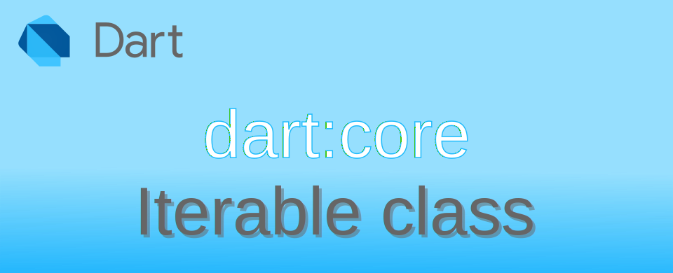

Dart: การใช้งาน Iterable class เบื้องต้น

ข้อมูลประเภท Collections ใน Dart เช่น List Set ต่างสืบทอดมาจาก Iterable class ส่วน Map class จะมี Map.entries Map.keys Map.values ที่คืนค่ามาเป็น Iterable เพื่อให้ผู้ใช้งานเข้าถึงค่าแต่ละส่วนที่อยู่ใน Map ได้
Iterable คือ ชุดของค่าหรือ elements ที่สามารถเข้าถึงได้ตามลำดับ การเข้าตามลำดับจากตัว element แรกจนถึงตัวสุดท้าย จะใช้ Iterator class ในการเข้าถึง ผ่านคำสั่ง Iterator.current และ Iterator.moveNext()
การสร้าง Iterable class
เนื่องจาก Iterable class เป็น Abstract classes ไม่สามารถ instance โดยตรงได้ แต่ต้องอาศัยสร้างจาก subtype พวก List หรือ Set แต่ถ้าหากจะสร้างโดยตรงจะมี constructor มาให้ 2 ตัวคือ
Iterable.empty()ใช้สำหรับสร้าง empty iterableIterable.generate()ใช้สำหรับสร้างสมาชิกจากฟังก์ชั่นที่ผู้ใช้กำหนด
สร้าง empty iterable
ตัวอย่างการสร้าง empty iterable โดยใช้ Iterable.empty() constructor ผลที่ได้จะว่า Iterable ว่าง ๆ มา ซึ่งในการใช้งานในชีวิตจริง ก็ไม่รู้เอาไปใช้ทำอะไรเหมือนกัน 😅 เพราะตัว Iterable class ไม่มีคำสั่งในการ เพิ่ม ลบ หรือแก้ไขสมาชิกมาให้
void main() {
var emptyIterable = Iterable.empty();
print(emptyIterable); // output → ()
print(emptyIterable.length); // output → 0
print(emptyIterable.first); // exception error → Bad state: No element
}
การสร้างด้วย Iterable.generate()
อีกวิธีในการสร้าง Iterable คือ ผู้ใช้ต้องเขียนฟังก์ชั่น ที่รับค่า index มาแล้วคืนค่าเป็นสมาชิกของ Iterable กลับไป หากไม่เขียนฟังก์ชั่น จะได้ Iterable ที่มีตัวเลขตาม index เป็นสมาชิกแทน
void main() {
var elements1 = Iterable.generate(10);
var elements2 = Iterable.generate(10, (index) => index); //same as elements1
print(elements1); // output → (0, 1, 2, 3, 4, 5, 6, 7, 8, 9)
print(elements2); // output → (0, 1, 2, 3, 4, 5, 6, 7, 8, 9)
print(elements1.length); // output → 10
print(elements1.first); // output → 0
// generate Iterable of even numbers 0 to 18
var elements3 = Iterable.generate(10, (index) => index * 2);
print(elements3); // output → (0, 2, 4, 6, 8, 10, 12, 14, 16, 18)
// generate Iterable of 'a' to 'j'
int codeOfA = 'a'.codeUnitAt(0);
var elements4 = Iterable.generate(10, (index) => String.fromCharCode(codeOfA + index));
print(elements4); // output → (a, b, c, d, e, f, g, h, i, j)
}
การเข้าถึงสมาชิกหรือ elements ใน Iterable
ใน Set และ List ซึ่งสืบทอดมาจาก Iterable สามารถใช้คำสั่งต่าง ๆ ของ Iterable class ได้ทันที
void main() {
var list1 = ["a", "b", "c"];
print(list1.length); // → 3
print(list1.first); // → a
print(list1.last); // → c
print(list1.elementAt(1)); // → b
// exception error → RangeError (index): Invalid value: Not in inclusive range 0..2: 3
print(list1.elementAt(3));
}
ใน Map สามารถเข้าถึง elements ของ key-value pair ได้โดยใช้ Map.keys Map.values
void main() {
var map1 = {'a': 'Ant', 'b': 'Boy', 'c': 'Cat'};
Iterable<String> k = map1.keys;
print(k.length); // → 3
print(k.first); // → a
print(k.elementAt(1)); // → b
print(k.last); // → c
Iterable<String> v = map1.values;
print(v.length); // → 3
print(v.first); // → Ant
print(v.elementAt(1)); // → Boy
print(v.last); // → Cat
}
หากต้องการเข้าถึง elements แบบ key-value pair เป็นชุด ๆ จะมีคำสั่ง Map.entries เป็น Iterable ของ MapEntry class
void main() {
var map1 = {'a': 'Ant', 'b': 'Boy', 'c': 'Cat'};
Iterable<MapEntry<String, String>> entriesMap1 = map1.entries;
print(entriesMap1.length); // → 3
print(entriesMap1.first); // → MapEntry(a: Ant)
print(entriesMap1.last); // → MapEntry(c: Cat)
print(entriesMap1.elementAt(1)); // → MapEntry(b: Boy)
MapEntry item1 = entriesMap1.first;
print(item1.key); // → a
print(item1.value); // → Ant
}
การท่องไปใน elements ด้วย Iterator class
Iterator class เป็น interface ที่มีคำสั่งที่ใช้สำหรับอ่านค่า elements ทั้งหมดเพียง 1 เที่ยว จุดประสงค์เพื่อความเรียบง่าย ไม่ต้องมี index ในการระบุตำแหน่ง สามารถนำไปใช้ในคำสั่งพวก loop ต่าง ๆ ในการไล่อ่านทีละ element จนครบ มีคำสั่งที่ใช้งานดังนี้
.moveNext()ใช้สำหรับเลื่อนไปลำดับถัดไป โดยจะคือค่าfalseเมื่อไม่มีตัวถัดไปแล้ว.currentใช้อ่านค่า element ลำดับปัจจุบัน
void main() {
var myList = [1, 2, 3];
Iterator<int> myIterator = myList.iterator;
// you need call moveNext() before read the value
print(myIterator.moveNext()); // output → true
print(myIterator.current); // output → 1
print(myIterator.moveNext()); // output → true
print(myIterator.current); // output → 2
print(myIterator.moveNext()); // output → true
print(myIterator.current); // output → 3
print(myIterator.moveNext()); // output → false
print(myIterator.current); // error → type 'Null' is not a subtype of type 'int' in type cast
}
จากตัวอย่าง เมื่อต้องการจะอ่านค่า element จาก elements ตามลำดับ ให้เรียก .moveNext() เพื่อเลื่อนไปลำดับไปเรื่อย ๆ โดยหากค่าที่คืนมาเป็น false แสดงว่าไม่มีค่าให้อ่านแล้ว ถ้าพยายามจะอ่านค่า .current จะคืนค่าเป็น null และอาจเกิด Exception error ขึ้นได้
โดยทั่วไปการใช้งาน Iterator จะใช้ใน loop เพื่อวนอ่านค่าจนครบทุกตัว
void main() {
var myList = [1, 2, 3];
Iterator<int> myIterator = myList.iterator;
while (myIterator.moveNext()) {
print(myIterator.current); // output → 1 2 3
}
}
จากตัวอย่างการใช้งาน Iterator ที่ไม่เหมือนกับ Iterable คือ มันจะสำเนาตัว Iterator ออกมาทุกครั้งที่ดึงออกมาใช้งาน และจะมีการจำตำแหน่งของแต่ละตัวแยกกันออกไป หากสร้าง Iterator ออกมา 2 ตัว แต่ละตัวจะทำงานแยกอิสระออกจากกัน ลองดูตัวอย่างการเขียนแบบ asynchronous เพื่ออ่านค่าจาก Iterator
void main() {
var myList = [1, 2, 3, 4];
Iterator<int> test1 = myList.iterator;
Iterator<int> test2 = myList.iterator;
delayPrint('test1-', test1, 1); // print value every 1 second
delayPrint('test2--', test2, 2); // print value every 2 seconds
}
void delayPrint(String elementsName, Iterator<int> items, int delaySeconds) async {
while (items.moveNext()) {
await Future.delayed(Duration(seconds: delaySeconds));
print("$elementsName: ${items.current}");
}
}
ผลที่ได้
test1-: 1
test2--: 1
test1-: 2
test1-: 3
test2--: 2
test1-: 4
test2--: 3
test2--: 4

เมื่อทำการสร้าง Iterator ออกมาจาก collection แล้ว หากมีการแก้ไข เพิ่ม ลบ สมาชิกใน collection ระหว่างการ moveNext() จะทำให้เกิด Error exception ขึ้นได้
คำสั่งที่น่าสนใจใน Iterable class
.any() ทดสอบว่ามี element ตัวไหนที่ตรงกับ test หรือไม่
.any() ใช้ทดสอบ element ว่ามีอย่างน้อย 1 ตัว ที่ตรงกับเงื่อนไข test ที่ต้องการหรือไม่
var numbers = <int>[1, 2, 3, 5, 6, 7];
print(numbers.any((element) => element >= 5)); // true;
print(numbers.any((element) => element >= 10)); // false;
.every() ทดสอบว่า elements ทั้งหมดตรงกับ test หรือไม่
.every() ใช้ทดสอบ elements ทุกตัว ตรงกับเงื่อนไข test ที่ต้องการหรือไม่
var numbers = <int>[1, 2, 3, 5, 6, 7];
print(numbers.every((element) => element >= 0)); // true;
print(numbers.every((element) => element >= 5)); // false;
.contains() ตรวจสอบว่ามีค่าที่สนใจอยู่ใน elements หรือไม่
.contains() ใช้ตรวจสอบว่ามีสามาชิกตรงกับค่าที่สนใจหรือไม่ ถ้ามีจะคืนค่า true กลับมา
var intList = [1, 2];
print(intList.contains(1)); // → true
print(intList.contains(5)); // → false
.firstWhere() หาสมาชิกที่ตรงกับเงื่อนไข test ตัวแรก
.firstWhere() ใช้สำหรับหาสมาชิกที่ตรงกับ test ที่กำหนด ถ้าพบจะคืนค่าสมาชิกที่พบ หากไม่พบจะคือค่าใน orElse หากไม่กำหนด orElse แล้วไม่เจอสมาชิก จะมีผลทำให้เกิด Exception error ขึ้น
var intList = [1, 2, 3, 4, 5];
print(intList.firstWhere((element) => element > 1)); // output → 2
print(intList.firstWhere((element) => element > 5, orElse: () => -1)); // output → -1
// if not found and missing orElse: will throw error
// exception error → Bad state: No element
print(intList.firstWhere((element) => element < 1));
.lastWhere() ทำงานเหมือน .firstWhere() แต่กลับทิศค้นหาจากหลังมาหน้า
.lastWhere() ใช้สำหรับหาสมาชิกที่ตรงกับ test ที่กำหนด หลักการเดียวกัน .firstWhere() แต่จะทำงานในทิศตรงกันข้าม จะค้นหาจากหลังมาหน้า เมื่อเจอจะคืนค่าสมาชิกที่ตรงกับเงื่อนไขกลับมา
var intList = [1, 2, 3, 4, 5];
print(intList.lastWhere((element) => element > 1)); // output → 5
print(intList.lastWhere((element) => element > 5, orElse: () => -1)); // output → -1
// if not found and missing orElse: will throw error
// exception error → Bad state: No element
print(intList.lastWhere((element) => element < 1));
สร้าง iterable ใหม่จากสมาชิกเดิมที่มีอยู่ ตามจำนวน หรือเงื่อนไขที่กำหนด
.take()ใช้สำหรับเอาสมาชิกด้านหน้าตามจำนวนที่ระบุ มาสร้างเป็น iterable ใหม่.skip()ทำงานตรงข้ามกับ .take() ไม่เอาสมาชิกด้านหน้าตามจำนวนที่ระบุ มาสร้างเป็น iterable ใหม่.takeWhile()กับ.skipWhile()ใช้เงื่อนไข test ในการเลือกสมาชิก มาสร้างเป็น iterable ใหม่ ส่วนตัวรู้สึกว่าค่อนข้างสับสนใจการใช้งาน เลยไม่อยากแนะนำเท่าไหร่
var intList = [1, 2, 3, 4, 5];
print(intList.take(3)); // → (1, 2, 3)
print(intList.skip(3)); // → (4, 5)
// in case is count > length
print(intList.take(100)); // → (1, 2, 3, 4, 5)
print(intList.skip(100)); // → ()
print(intList.takeWhile((value) => value != 3)); // → (1, 2)
print(intList.skipWhile((value) => value != 3)); // → (3, 4, 5)
.where()ใช้เงื่อนไข test ในการเลือกสมาชิกทั้งหมด มาสร้างเป็น iterable ใหม่.whereType()ใช้เงื่อนไขในการเลือกสมาชิกทั้งหมด มาสร้างเป็น iterable ใหม่
List<num?> numList = [1, 2.5, 3.0, 4, null];
print(numList.where((element) => element is int && element > 0)); // → (1, 4)
print(numList.whereType<int>()); // → (1, 4)
print(numList.whereType<double>()); // → (2.5, 3.0)
print(numList.whereType<int?>()); // → (1, 4, null)
คำสั่งอรรถประโยชน์ที่น่าสนใจ
.join()สำหรับเอาสมาชิกทุกตัวแปลงเป็น String แล้วเอามาต่อกัน โดยมันตัวคั่นตามที่ระบุ.map()สำหรับเอาสมาชิกทุกตัวมาแปลงตามฟังก์ชั่นที่ผู้ใช้กำหนด แล้วคืนเป็น Iterable ใหม่.reduce()สำหรับลดจำนวนสมาชิกให้เหลือแค่ค่าเดียว โดยใช้วิธีการตามฟังก์ชั่นที่ผู้ใช้กำหนด
ตัวอย่างการใช้งาน .join() สำหรับเอาสมาชิกมาแปลงเป็น String แล้วต่อกันตามตัวคั่นที่กำหนด หากไม่กำหนดตัวคั่น ผลที่ได้จะเป็นเอาสมาชิกทั้งหมดมาต่อกันโดยตรง
var words = ['Hello', 'World'];
print(words.join()); // output → HelloWorld
print(words.join(', ')); // output → Hello, World
print(words.join(' - ')); // output → Hello - World
ตัวอย่างการใช้งาน .map() เพื่อสร้าง Iterable ใหม่ โดยใช้แปลงข้อมูลที่แปลงโดยฟังก์ชั่นที่ผู้ใช้กำหนด
var words = ['Hello', 'World'];
print(words.map((element) => element.toUpperCase())); // output → (HELLO, WORLD)
print(words.map((element) => element.length)); // output → (5, 5)
ตัวอย่างการใช้งาน .reduce() เพื่อสร้าง Iterable ใหม่ โดยใช้แปลงข้อมูลที่แปลงโดยฟังก์ชั่นที่ผู้ใช้กำหนด
var numbers = [0, 5, 10, 30];
var result = numbers.reduce((lastResult, element) => lastResult + element);
print(result); // output → 45
อธิบายการทำงานของ .reduce() ในตัวอย่างจะเห็นว่าฟังก์ชั่นที่ใช้จะรับค่า 2 ตัวคือ lastResult กับ element โดยในแต่ละรอบที่นำสมาชิกมาประมวลผล จะเอาผลที่ได้ในแต่ละรอบไปใช้ในรอบถัดไปคือ lastResult เพื่อให้เห็นภาพการทำงาน จะแสดงค่าของตัวแปรที่รับมาแต่ละรอบดังนี้
void main() {
var numbers = [0, 5, 10, 30];
var loopCount = 0;
var result = numbers.reduce(
(lastResult, element) {
++loopCount;
print('loopCount: $loopCount\n');
print('lastResult: $lastResult');
print('element: $element');
var returnValue = lastResult + element;
print('returnValue: $returnValue');
print('------------------------------');
return returnValue;
}
);
}
ผลที่ได้
loopCount: 1
lastResult: 0
element: 5
returnValue: 5
------------------------------
loopCount: 2
lastResult: 5
element: 10
returnValue: 15
------------------------------
loopCount: 3
lastResult: 15
element: 30
returnValue: 45
------------------------------
จากผลที่ได้อธิบายการทำงานได้ดังนี้
- จะเห็นว่าในรอบแรก จะเอา 0 (ตัวแรก) + 5 (ตัวที่สอง) = 5 แล้วเอา 5 ไปใช้คำนวณในรอบถัดไป
- รอบที่สอง เอา 5 จากรอบแรกมา กับสมาชิก 10 (ตัวที่สาม) 5 + 10 = 15 เอาผลที่ได้ไปใช้ในรอบถัดไป
- รอบที่สาม เอา 15 จากรอบแรกมา กับสมาชิก 30 (ตัวที่สี่) 15 + 30 = 45 เอาผลที่ได้ คืนกลับไป เนื่องจากไม่มีสมาชิกเหลือแล้ว
การแปลง Generic ของ Iterable ด้วย castFrom()
.castFrom() เป็น static method ของ Iterable class ใช้สำหรับ cast เปลี่ยนประเภทของ Generic ใหม่ โดยผู้ใช้ต้องทราบเองว่าสิ่งที่ต้องการ cast สามารถทำ type casting ได้เมื่อตอน runtime เช่น
- จาก
double→num - จาก
int→num
List<int> intList = [0, 5, 10, 30];
List<num> newList = Iterable.castFrom<int, num>(intList).toList();
newList.add(10.5); // add double is OK for num
print(newList); // → [0, 5, 10, 30, 10.5]
List<int> intList2 = [0, 5, 10, 30];
List<int?> newListWithNull = Iterable.castFrom<int, int?>(intList2).toList();
newListWithNull.add(null);
print(newListWithNull); // → [0, 5, 10, 30, null]
ถ้าพยายาม cast ในสิ่งที่เป็นไปไม่ได้ ก็จะเกิด Exception error → type 'xxx' is not a subtype of type 'yyy' in type cast
ข้อสังเกต ในการเขียนโปรแกรมทั่วไป ผู้ใช้สามารถใช้ ... เพื่อนำ List ที่มีอยู่มาสร้าง List ใหม่ โดยกำหนด Generic ก็สามารถทำได้เหมือนกับ .castFrom() บางทีก็ไม่รู้ว่าจะเขียนให้ยาวไปเพื่ออะไร 🙄
List<int> intList = [0, 5, 10, 30];
List<num> newList = <num>[...intList];
newList.add(10.5); // add double is OK for num
print(newList); // → [0, 5, 10, 30, 10.5]
หากไม่สามารถใช้การ cast ด้วยวิธีปกติของ Dart ได้ สามารถใช้คำสั่ง .map() แล้วเขียนฟังก์ชั่นระบุเงื่อนไขวิธีการแปลงข้อมูลเองก็เป็นอีกทางเลือกเช่นกัน
List<num> numList = [0, 5, 10, 30.0, 1.5];
List<int> intList = numList.map(
(element) => (element is int) ? element : element.toInt()
).toList();
print(intList); // → [0, 5, 10, 30, 1]